SFT → LoRA & QLoRA → learning from feedback with PPO, GRPO and DPO. Three runnable notebooks train real models on a free T4 GPU, so you can watch each post-training method work — and see where it struggles.
Lecture 5 explained how LLMs are pre-trained; Lecture 6 explained why post-training uses reinforcement learning. This tutorial runs the whole post-training toolbox at small scale. The slides walk through SFT, parameter-efficient fine-tuning (LoRA, QLoRA) and the three feedback-based methods. The notebooks then train real models: each one isolates one way of turning a training signal into better behaviour.
| Notebook | Method | Model | Data | Training signal |
|---|---|---|---|---|
| A | SFT → reward model → PPO | Qwen3-4B-Base, 4-bit NF4 + LoRA | SST-2 movie reviews | next-token NLL; human sentiment labels → learned reward |
| B | GRPO | Qwen2-0.5B-Instruct + LoRA | 128 generated arithmetic questions | verifiable reward: correct answer + format |
| C | DPO | SmolLM2-135M-Instruct | UltraFeedback preference pairs | chosen ≻ rejected, relative to a frozen reference |
| Part | What you do | Time (approx.) |
|---|---|---|
| Slides | SFT, LoRA/QLoRA, PPO, GRPO, DPO | 60 min |
| Notebook C (DPO) | Shortest run: 32 steps, about 40 s of training on a T4 | 15 min |
| Notebook B (GRPO) | Screening + 64 steps, about 3 min of training | 25 min |
| Notebook A (SFT + RM + PPO) | Longest run: three training stages on a 4B model; start it first and read while it trains | 60+ min |
52 slides in four parts — the big picture, SFT, efficient fine-tuning (LoRA & QLoRA), and learning from feedback (PPO, GRPO, DPO) — with a running example: turning a 7B base model into a helpful, safe medical assistant.
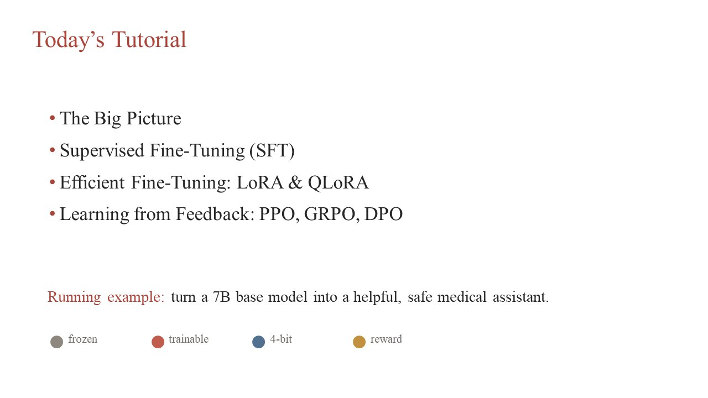
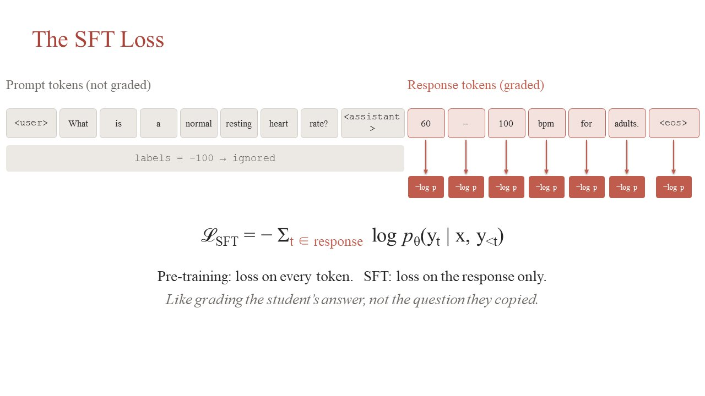
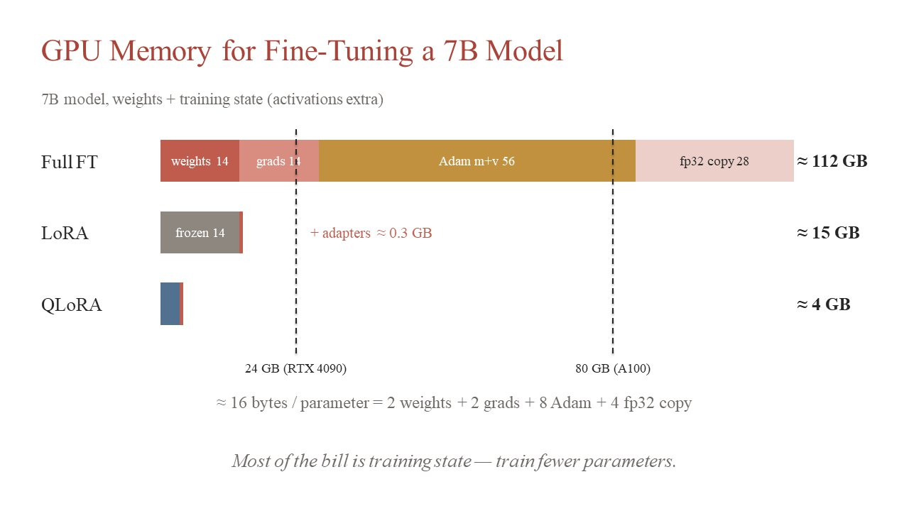
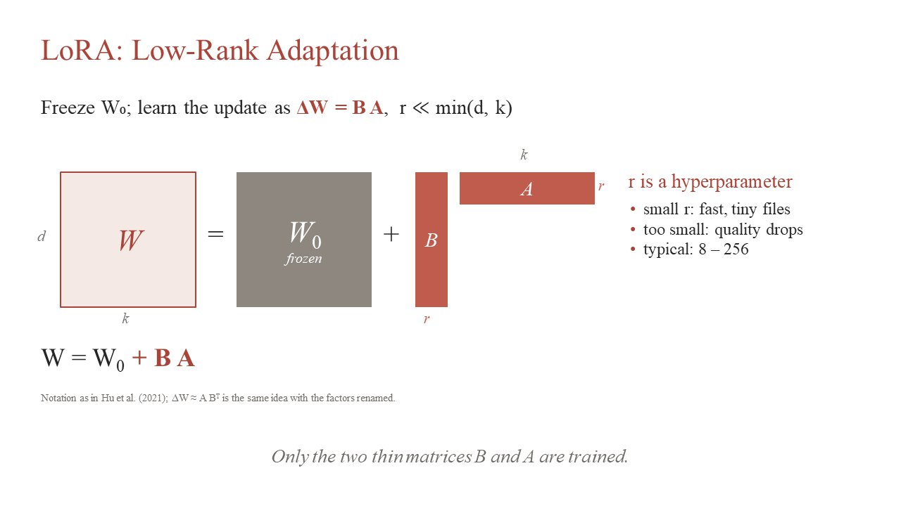
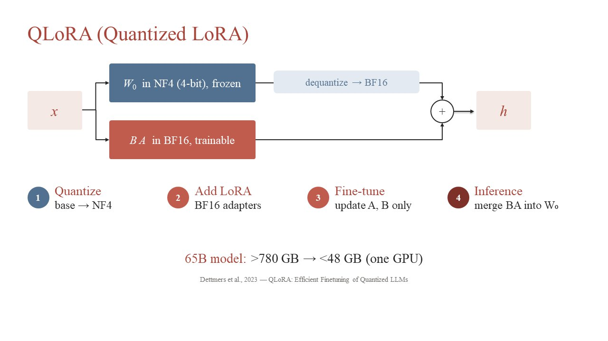
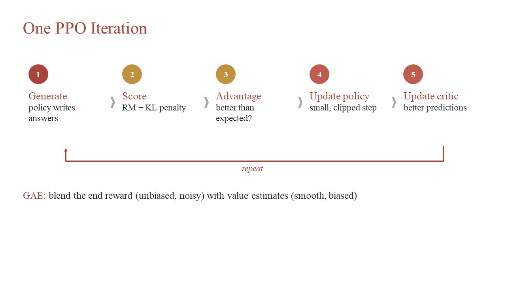
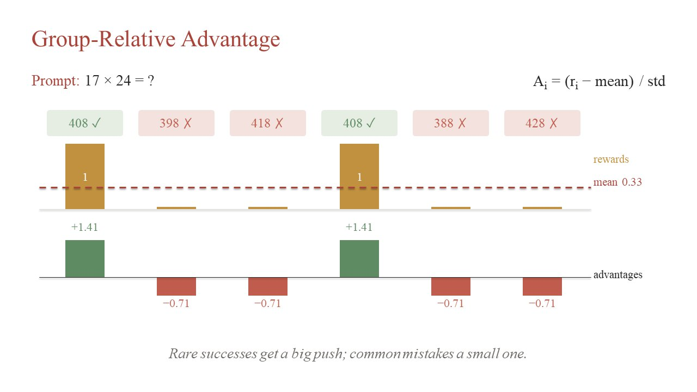
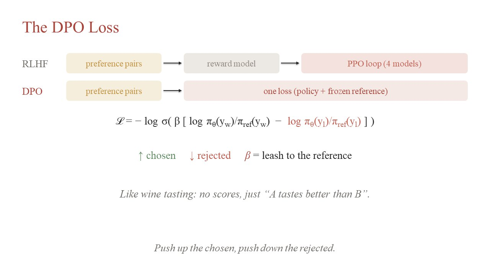
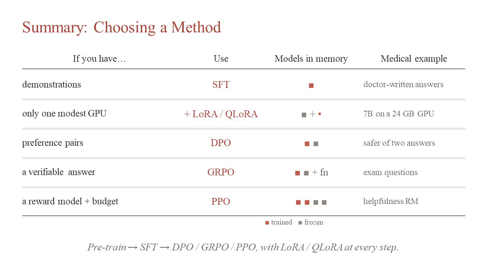
Prompt tokens get label -100 and are ignored — like grading the student's answer, not the question they copied.
Fine-tuning a 7B model needs about 16 bytes per parameter: 2 (weights) + 2 (gradients) + 8 (Adam) + 4 (fp32 copy).
With \(d=k=4096,\ r=16\): 131K instead of 16.8M trainable weights per matrix (128× fewer). \(B=0\) at start, so training begins exactly at the pre-trained model.
Store the frozen base in NF4 (4-bit levels placed at normal-distribution quantiles, dense near zero), dequantize on the fly, and train only BF16 adapters. A 65B model goes from >780 GB to <48 GB — one GPU.
The notebooks were tested on Kaggle (Python 3.13, PyTorch 2.11, CUDA 12.8). They write to /kaggle/working; on other
machines, change that path at the top of each notebook. Any CUDA GPU with ≥ 15 GB memory works.
pip install "transformers==4.51.3" \
"trl==0.18.2" "peft==0.15.2" \
"datasets==3.5.0" "accelerate==1.6.0" \
bitsandbytes math-verifyThese are the pins used by Notebooks B and C. Notebook A installs newer versions in its own first cell.
HF_TOKEN as a Kaggle secret.transformerspeftbitsandbytesdatasets23 cellsKaggle T4
The classic InstructGPT recipe in miniature. A base model learns to write movie reviews (SFT), a reward model learns to score sentiment from human labels, and PPO steers the SFT model toward reviews the reward model scores as positive.
Instead of loading three copies of a 4B model, the notebook loads one base in 4-bit NF4 and attaches three independent LoRA adapters
(rank 8 on q,k,v,o projections). Switching the active adapter switches the “model”:
qconfig = BitsAndBytesConfig(load_in_4bit=True, bnb_4bit_quant_type="nf4", bnb_4bit_use_double_quant=True, bnb_4bit_compute_dtype=DTYPE) base = AutoModelForCausalLM.from_pretrained(MODEL_ID, quantization_config=qconfig, device_map={"": 0}) base = prepare_model_for_kbit_training(base, use_gradient_checkpointing=False) lora = LoraConfig(r=8, lora_alpha=16, lora_dropout=0.0, target_modules=["q_proj", "k_proj", "v_proj", "o_proj"], task_type="CAUSAL_LM") model = get_peft_model(base, lora, adapter_name="sft") # adapter 1 model.add_adapter("reward", copy.deepcopy(lora)) # adapter 2 model.add_adapter("ppo", copy.deepcopy(lora)) # adapter 3 reward_head = nn.Linear(H, 1) # score from the last token's hidden state value_head = nn.Linear(H, 1) # V(s_t) for every generated token
The SST-2 data are split once and frozen, so every stage sees different reviews:
SFT continues next-token training on real movie reviews (128 optimizer steps × 8 accumulated reviews, lr 1e-4). It teaches the style of reviews, not positivity: half of the reviews are negative.
| Review prefix | Base model continues… | After SFT |
|---|---|---|
| it 's just disappointingly | cheap . How would the previous sentence be correctly capitalized? … | portable fiction . |
| the film is beautifully mounted , | enthralingly photographed , expertly edited and confidently assembled . yet , overall , the movie falls short because of the shoestring budget … | enthralingly photographed and expertly edited . |
The base model drifts into web-text habits (a capitalization quiz); after SFT the continuations look like SST-2 reviews.
The reward model is the same backbone with its own adapter and a linear reward_head on the last token. It is trained with
binary cross-entropy on human sentiment labels:
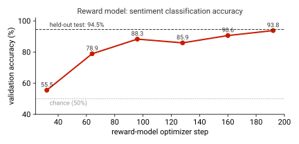
The reward model's score is mapped to \([-1, 1]\) and added at the last token; every token also pays a KL penalty for drifting from the SFT policy:
A value head estimates \(V(s_t)\); advantages come from GAE (\(\gamma=1,\ \lambda=0.95\)), and the policy is updated with the clipped objective (\(\epsilon=0.2\)):
# --- rollout: per-token KL penalty, reward-model score added at the last token score = 2 * reward_logits(sequence).sigmoid() - 1 # in [-1, 1] rewards = -kl_beta * (old_logprobs - ref_logprobs) * mask rewards[-1] += score # --- GAE, computed backwards over the generated tokens for t in reversed(range(T)): delta = rewards[:, t] + gamma * values[:, t + 1] - values[:, t] carry = delta + gamma * lam * carry advantage[:, t] = carry returns = advantage + values advantage = (advantage - advantage.mean()) / advantage.std() # normalised # --- clipped policy loss + clipped value loss ratio = torch.exp(logprobs - old_logprobs) pg = torch.maximum(-ratio * adv, -ratio.clamp(1 - clip, 1 + clip) * adv).mean() vclip = old_values + (vpreds - old_values).clamp(-value_clip, value_clip) vf = 0.5 * torch.maximum((vpreds - returns) ** 2, (vclip - returns) ** 2).mean() loss = pg + value_coef * vf
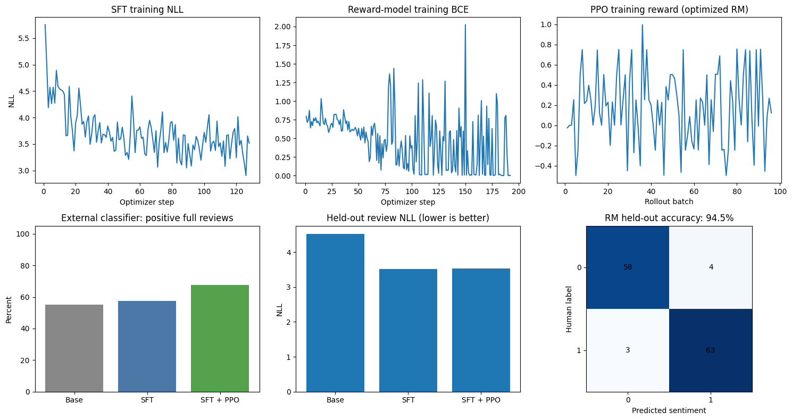
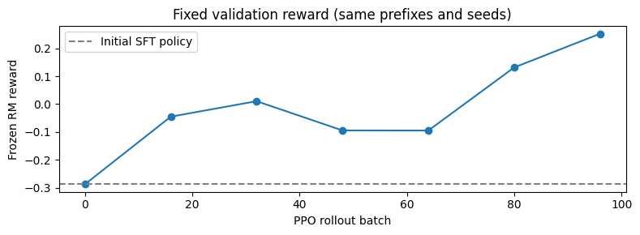
| Metric (40 test prefixes) | SFT | SFT + PPO |
|---|---|---|
| Positive full reviews (external DistilBERT judge) | 57.5% | 67.5% |
| Positive continuations only | 50.0% | 52.5% |
| Held-out review NLL | 3.52 | ≈ 3.52 |
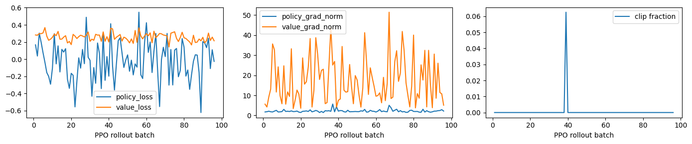
trl GRPOTrainerpeftmath-verify19 cells≈3 min training
The DeepSeek-R1 recipe in miniature: no reward model and no critic. A Python function checks the final answer, and each answer is compared with the other answers sampled for the same question.
The policy is Qwen2-0.5B-Instruct with a rank-16 LoRA (2.16M trainable parameters, 0.44% of the model). Training questions are 128 generated arithmetic problems (addition, subtraction with negative results, multiplication, two-step expressions, word problems); 12 fixed questions are held out. The system prompt asks for a short calculation and a final answer in tags:
<think>, non-empty thinking,
opening <answer>, non-empty answer. Partial credit makes the signal less sparse.math-verify), else 0. Only the final answer is verified, not each step.For each question GRPO samples a group of \(G=4\) answers and normalises their rewards within the group — the group mean replaces PPO's learned value model:
If all four answers get the same reward, every advantage is zero and the question teaches nothing. The notebook therefore screens training questions first and keeps 8 of the first 12 probes whose answers were mixed (some right, some wrong). Even so, groups often become uniform during training:
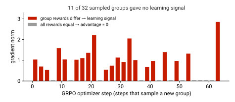
training_args = GRPOConfig( num_generations=4, # group size G num_iterations=2, # reuse each sampled group twice (needs the clip) max_steps=64, learning_rate=2e-5, temperature=0.9, top_p=0.95, # sampling must be diverse to get mixed groups beta=0.02, epsilon=0.2, # KL coefficient and clip range loss_type="grpo", scale_rewards=True, reward_weights=[0.1, 1.0], # format, correctness ) trainer = GRPOTrainer(model=model, args=training_args, reward_funcs=[format_reward, accuracy_reward], train_dataset=train_dataset, peft_config=lora_config) trainer.train()
reward_std, frac_reward_zero_std, grad_norm and kl instead.| # | Held-out question | Reference | Before GRPO | After GRPO |
|---|---|---|---|---|
| 1 | 27 × 34 | 918 | −888 | 888 |
| 2 | 387 + 568 | 955 | −955 | 955 ✓ |
| 3 | (17 + 26) × 8 | 344 | 344 ✓ | 344 ✓ |
| 4 | 27 − 64 | −37 | −37 ✓ | −37 ✓ |
| 5 | 144 / 12 + 7 × 3 | 33 | 165 | 33 ✓ |
| 6 | 18 boxes of 24 pencils, 157 sold: how many remain? | 275 | no answer | 275 ✓ |
| 7 | 46 × 17 | 782 | −742 | 742 |
| 8 | 623 − 278 | 345 | −345 | −345 |
| 9 | 39 − 82 | −43 | −43 ✓ | −43 ✓ |
| 10 | 23 × 7 − 48 | 113 | 113 ✓ | 113 ✓ |
| 11 | (63 − 28) × 6 | 210 | 210 ✓ | 210 ✓ |
| 12 | 14 bags of 18 marbles, 95 given away: how many remain? | 157 | no answer | 157 ✓ |
| Correct | 5 / 12 | 9 / 12 |
<think>.trl DPOTrainertransformers17 cells≈40 s training
Offline preference learning: no reward model, no value head, no generation during training. The model learns from fixed pairs of a preferred and a rejected answer to the same prompt.
The data are 128 short pairs from trl-lib/ultrafeedback_binarized (16 more for evaluation). One example:
DPO measures how much more the policy prefers the chosen answer than the frozen reference does, and pushes that margin up:
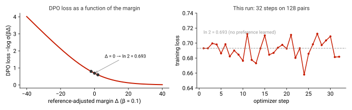
training_args = DPOConfig( beta=0.1, loss_type="sigmoid", # L = -log sigmoid(beta * margin) learning_rate=5e-6, max_steps=32, per_device_train_batch_size=1, gradient_accumulation_steps=4, ) trainer = DPOTrainer(model=model, ref_model=None, # None: TRL makes a frozen copy as reference args=training_args, train_dataset=train_dataset, eval_dataset=eval_dataset, processing_class=tokenizer) trainer.train() metrics = trainer.evaluate() # rewards/accuracies, rewards/margins, loss
With 32 steps at learning rate 5e-6, the loss never leaves \(\ln 2\): the model has barely moved from the reference, and the evaluation margin is indistinguishable from zero. The answers do change (greedy decoding amplifies tiny probability changes) — for example the photosynthesis explanation became a numbered list — but these changes are not evidence of learned preferences.
| If you have… | Use | Models in memory | Generates during training? | Signal comes from |
|---|---|---|---|---|
| demonstrations (prompt, answer) | SFT | 1 | no | human-written answers |
| a modest GPU | + LoRA / QLoRA | 1 + small adapters | — | — |
| preference pairs (chosen, rejected) | DPO | 2: policy + frozen reference | no (offline) | pairwise human/AI judgments |
| a verifiable answer | GRPO | 2 + a reward function | yes, groups of \(G\) | rules: answer checks, tests |
| a reward model and a budget | PPO | 4: policy, reference, reward model, critic | yes | learned reward model |
In Notebook A the four PPO “models” share one 4-bit base: they are adapters and small heads, which is why a 4B model fits on a 16 GB T4.
A short companion deck by Siqi Rao covers three tools you will need for assignments and the final project.
AGENTS.md, reusable workflows in Skills, and always review with git diff and your tests.import os from openai import OpenAI # many providers speak the same protocol client = OpenAI(api_key=os.environ["LLM_API_KEY"], # never hard-code the key base_url="https://api.deepseek.com") # change for another provider reply = client.chat.completions.create( model="deepseek-chat", messages=[{"role": "user", "content": "Explain DPO in two sentences."}]) print(reply.choices[0].message.content)
| Symptom | Cause and fix |
|---|---|
RuntimeError: Start a fresh Kaggle session and run this cell first | Libraries were imported before the pinned environment was set up. Run → Restart session, then run the setup cell first. |
Enable a Kaggle GPU accelerator / CUDA out of memory | Select GPU T4 in the session options. On a smaller GPU reduce MAX_COMPLETION_LENGTH,
GROUP_SIZE or the rollout batch. |
| Downloads fail or are very slow | Turn Internet on in Kaggle; add an HF_TOKEN secret to avoid Hub rate limits. |
| Notebook A session timed out mid-run | Each stage saves a verified ZIP. Download it from the Output panel, attach it as a private dataset and set
RUN_MODE = "ppo_retry" to resume PPO without retraining SFT and the reward model. |
| GRPO loss is ≈ 0 and nothing seems to happen | Normal for the logged loss (centred advantages). If frac_reward_zero_std is 1, all groups are
uniform: use questions of mixed difficulty or a larger group. |
| DPO loss stays at 0.693 | The policy has not moved from the reference: train longer, raise the learning rate, or use more pairs; check rewards/accuracies. |
| PPO reward goes up but outputs get worse | Reward hacking: the policy exploits the reward model (e.g. generic praise). Increase \(\beta\), inspect samples, and evaluate with an independent judge. |
| Results change between runs | Sampling, small data and few steps make runs noisy. Fix seeds, compare on the same prompts, and report intervals rather than single numbers. |
Not graded — but they map directly onto Assignment 2 and typical final-project experiments.
MAX_STEPS to 200 and the learning rate to 5e-5. Plot
rewards/margins and rewards/accuracies. Then vary \(\beta\in\{0.01, 0.1, 0.5\}\): what changes?GRPOTrainer. Report before/after accuracy with a confidence interval.Click a question to reveal the answer.
-100 in SFT?-100 are ignored by the cross-entropy loss, so the model is not trained to reproduce the user's question.Next steps: Lecture 6 slides (RL for LLM post-training) · Tutorial 1 · Course schedule